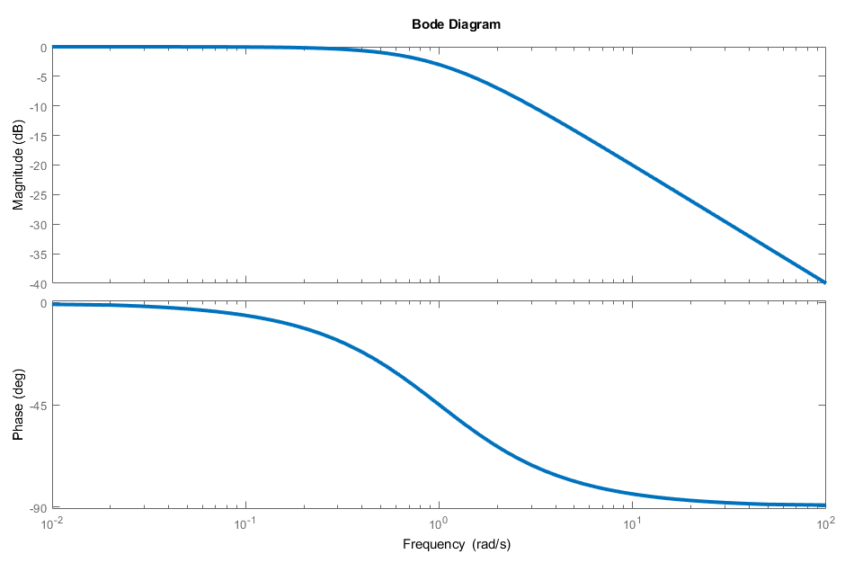
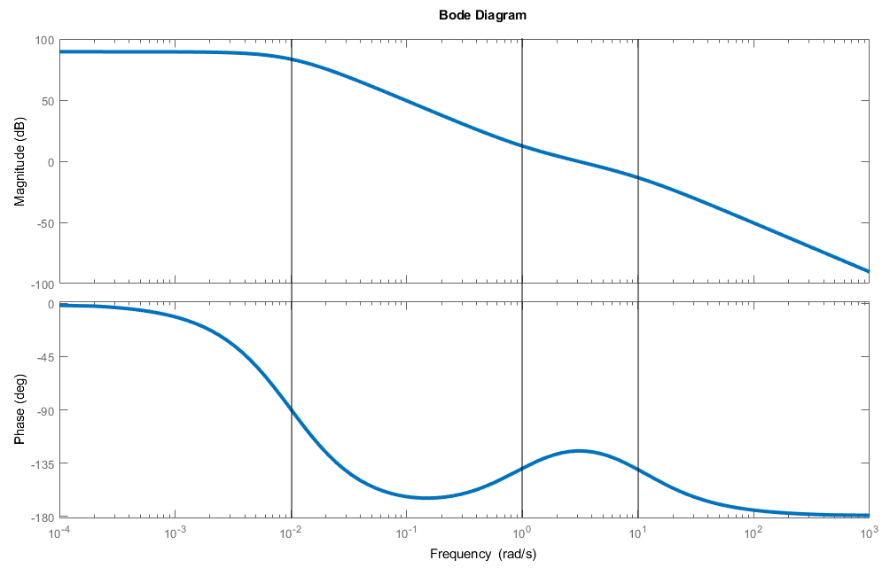
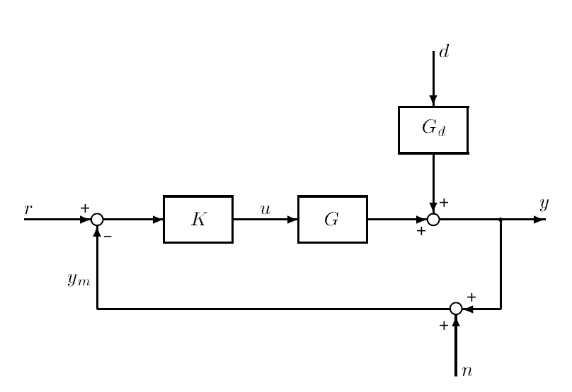

A system is modeled by the transfer function \(G(s)\) can also be represented using a state-space realization, as follows:
\[ G(s) = \begin{bmatrix} \begin{array}{c|c} A & B \\ \hline C & D \end{array} \end{bmatrix} \qquad \equiv \qquad \begin{eqnarray} \dot{x} &=& Ax + Bu \\ y &=& Cx + Du \end{eqnarray}\]
We can take the Laplace transform of this representation to get the following formula:
\[ G(s) = C(sI-A)^{-1} B + D \]
We say \(G(s)\) is strictly proper if \(G(i\omega) \to 0\) as \(\omega \to \infty\). \(G(i\omega)\) approaches 0 when the degree of the denominator is higher than that of the numerator.
For example, the transfer function
\[G(s) = \frac{1}{s+1}\]
is strictly proper because:
\[ \deg (s+1) = 1 > \deg (1) = 0\]
Looking at the Bode plot of this transfer function shows that the magnitude continues to trend downwards towards \(-\infty\) dB, which is equal to 0 (by any reasonable metric).

We say \(G(s)\) is semiproper/biproper if the degree of the denominator is equal to that of the numerator, and \(G(s)\) is proper if it is strictly proper or semiproper. (It’s equivalent to say \(G(s)\) is semiproper if \(G(i\omega) \to d \neq 0\) as \(\omega \to \infty\).) A notable example of a semiproper transfer function is the sensitivity function \(S\).
\(G(s)\) is improper if \(G(i\omega) \to \infty\) as \(\omega \to \infty\) or when the degree of the numerator exceeds that of the denominator.
So what exactly makes the frequency response so compelling? Well, plugging a sinusoidal input into a linear time-invariant (LTI) system yields a sinusoidal response of the same frequency (in the steady-state). However, the response may differ in amplitude and phase.
Consider an LTI system with input \(u(t) = U_0 \sin(\omega t + \alpha)\) and output is \(y(t) = Y_0 \sin(\omega t + \beta)\). We define amplification (or gain) as:
\[A := \frac{Y_0}{U_0} = |G(i\omega)|\]
Essentially, it’s a ratio of the output wave’s amplitude to the input wave’s amplitude.
The phase shift \(\varphi := \beta - \alpha = \measuredangle G(i\omega)\) is the difference between the phases of the input and output signals.
We can also use phasor notation to represent sinusoidal functions - since \(\sin(\omega t) = \text{Im}(e^{i\omega t})\), we can write the time domain sinusoidal signals as follows:
\[u(t) = U_0 \; \text{Im} \left\{ e^{i(\omega t+ \alpha)} \right\}\] \[y(t) = Y_0 \; \text{Im} \left\{ e^{i(\omega t+ \beta)} \right\}\]
where:
\[Y_0 = |G(i \omega)| U_0 \qquad \qquad \beta = \measuredangle G(i \omega) + \alpha\]
We define the complex numbers \(\hat{u}\) and \(\hat{y}\) as follows1
\[\hat{u}(\omega) = U_0 e^{i \alpha} \qquad \qquad \hat{y}(\omega) = Y_0 e^{i \beta}\]
so we can write the sinusoidal response as:
\[ \hat{y}(\omega) e^{i\omega t} = G(i\omega) \hat{u}(\omega) e^{i\omega t}\]
or more succinctly:
\[ \hat{y}(\omega) = G(i\omega) \hat{u}(\omega) \]
Additionally, before we dive into the rest of the course, we should be able to sketch a Bode plot by hand. We have MATLAB/Python, but having the ability to sketch good straight-line approximations comes with the intuition of how placing additional zeros/poles affects the dynamic behavior of a system.
Put briefly, the rules are as follows:
- For magnitude plots, break down (subtract 20 dB/dec from the slope) at poles and break up (add 20 dB/dec to the slope) at zeroes.
- For phase plots, phase -90\(^\circ\) at poles and phase +90\(^\circ\) at zeroes. (This rule is reversed of \(\text{Re}(z) > 0\)).
For example, the transfer function
\[G(s) = \frac{30(s+1)}{(s+0.01)^2 (s+10)}\]
has one zero (at \(s=-1\)) and three poles (two at \(s=-0.01\) and one at \(s=-10\)). First, we calculate the DC gain, or \(G(0)\).
\[G(0) = \frac{30(0+1)}{(0+0.01)^2 (0+10)} = 30\times 10^3\]
Since \(G(0) \in \mathbb{R}^+\), the initial phase is \(0^\circ\). Let’s take a look at the actual Bode plot to see how we might approach this naturally:

There’s two poles at \(s= -0.01 = 10^{-2}\), so the slope of the magnitude plot decreases by 40 dB/dec, and becomes -40 dB/dec (it breaks down twice), and the phase goes down to \(-180^\circ\).
Next, there’s a zero at \(s = 1 = 10^0\), so the slope of the magnitude plot increases by 20 dB/dec, becoming -20 dB/dec (it breaks up once). The phase goes up to \(-90^\circ\).
Finally, there’s one more pole at \(s = 10 = 10^1\), so the slope of the magnitude plot decreases by 20 dB/dec, becoming -40 dB/dec (it breaks down once). The phase once again goes down to \(-180^\circ\).
Armed with just a Bode plot, we can make solid, educated guesses about the transfer function and infer things about stability.

Finally, we take a peek at a one degree-of-freedom feedback control system, pictured above. The input to the controller \(K\) is \(r-y_m\), where \(y_m = y+n\) is the measured output (used for negative feedback) and \(n\) is measurement noise.
Some quick block diagram algebra yields the following equation for the input to the plant:
\[ u = K(r- y_m) = K (r - (y+n))\]
Our goal with this controller is to tweak input \(u\) such that the error \(e = y-r\) remains small.
The plant model is written as:
\[y = Gu + G_d \, d = GK(r-(y+n)) + G_d \, d\]
We continue chugging through algebra to isolate \(y\):
\[(I+GK) y = GKr + G_d \, d - GKn\] \[y = (I+GK)^{-1} GKr + (I+GK)^{-1} G_d \, d - (I+GK)^{-1} GKn\]
We define the following notation:
- \(L = GK\) is denoted the loop transfer function.
- \(S = (I+GK)^{-1} = (I+L)^{-1}\) is denoted the sensitivity function, the CLTF from the output disturbances to the outputs.
- \(T = (I+GK)^{-1} GK = (I+L)^{-1} L\) is denoted the complementary sensitivity function, the CLTF from the reference signals to the outputs.
Notice that \(S+T = I\).
We can now rewrite the closed-loop response as follows:
\[y = Tr + S G_d \, d - T n\]
Just as a bonus, for SISO systems, the closed-loop transfer function (CLTF) rule for SISO systems with negative feedback can be summarized as follows:
\[ \text{CLTF} = \frac{\text{forward gain}}{1 + \text{loop gain}} \]
where “forward gain” represents the transfer function for the direct effect of the input on the output, and “loop gain” is the transfer function around the loop.
Footnotes
Apologies to Skogestad and Postlethwaite, your notation sucks. I’m switching things out wherever I see fit.↩︎